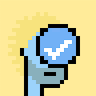
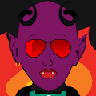
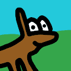
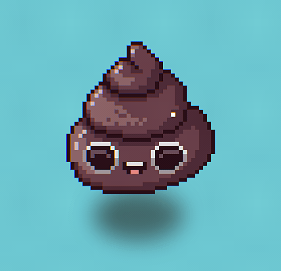

Plooto Plooto 是一个链上工厂，用于创建受 Guardians DAO 保护的独特行星。随意以任何你想要的方式使用你的行星。 Plooto 是由 Guardians DAO 运营的去中心化行星工厂。每个星球都存储在区块链
Plump Kittens 进入绒毛巢穴需要您自担风险，因为这里可能太可爱了！ ▶ 什么是丰满小猫？ Plump Kittens 是一个 NFT（不可替代代币）系列。存储在区块链上的数字艺术品集合。 ▶
PocketWaifus 6,969 个口袋大小的 waifus 紧凑地存储在区块链上，因此您永远不必失去她。 FAP 是一种算法稳定币，目标价为 0.69 美元。农业从 2021 年 10 月 19 日开始。 ▶ 什么是袖Pocke
PogPunks NFT 位于第一个多链元节中心的朋克派系。 游戏玩家 (PoGs) 将成为第一个使用名为 Multiverse Oasis (MVO) 的平台的 NFT 社区。MVO 是一个 MMO 生成器，它将使所有 NFT 社区——不仅仅是拥有
Pointless Pebbles Pointless Pebbles 是一个很小的集合727726 个微小的生成的鹅卵石。永远不会死的宠物！ 每个 Pointless Pebble 都带有 1 个免费的 Nounish Pebble。 ▶ 什么是无意义的鹅卵石？ Pointless Pebbles
PokePunkz 欢迎来到 PokePunkz 俱乐部。一个供收藏家一起享受社区交易和乐趣的地方。每个 PokePunk 都将在 ERC721 中铸造出来，使它们在我们迈向虚拟世界时可用于元宇宙开发进程。 PokePunkz 俱乐
PolkaPets Base Set V2 PolkaPets 官方集换式卡牌游戏合集 ▶ 什么是 PolkaPets Base Set V2？ PolkaPets Base Set V2 是一个 NFT（Non-fungible token）集合。存储在区块链上的数字艺术品集合。
Poly Duckz Poly Duckz 是 Polygon 区块链上 9999 只鸭子的游乐场。每只鸭子都是独一无二的，由 180 个特征以编程方式生成。他们喜欢派对、电子烟和眼镜，所以决定和人类一起生活。从我
Poly Okay Bears Yacht Club 每个 Bored Ape 都是独一无二的，并以编程方式从 170 多种可能的特征中生成，包括表情、头饰、服装等。所有类人猿都是毒品，但有些比其他人更罕见。生活在以太坊
Poly Punks NFT 当前价格：| 白/黑 - 0.001 ETH |猿/僵尸 - 0.002 ETH | 多边形/辛普森 - 0.005 ETH | 吸血鬼/兽人 - 0.01 ETH （增加底线制度，创造价值，回报早期投资者！） 所有 Poly Punk 拥有者
Poly Pythons Collection 5,000 条独特风格的像素蟒的集合世界上第一个也是最大的加密收藏品和不可替代代币 (NFT) 的数字市场。购买、出售和发现独家数字商品。 ▶ 什么是 Poly Pythons 集合？ Poly Pythons Collection
Poly Rabbits 多边形区块链上的聚兔Poly Rabbits 是 10,000 个独特 NFT 的集合。每只杀手兔都是 1/1，并拥有不同稀有度的随机物品。欢迎来到我们的杀手俱乐部！ ▶ 什么是Pol
PolyCoins Polygon Network 上首次收集独特的可收藏 NFT 硬币。 所有硬币都是独一无二的，不能复制。Polygon Network 上的 NFT 艺术币集合。 什么是多币收藏？POLYCOINS COLLECTION 是
PolyDoge Baseball 它是由传奇艺术家 Dines 和 Colin Perras 创作的——在内部 PolyDoge 之王！ 2021 年 6 月 12 日，Polydoge 帮助赞助了在德克萨斯州阿灵顿举行的 2021 年名人垒球经典赛。 通过这项
PolyDoge Cards PolyDoge 卡的持有者是精英社会的成员 - 具有高级、精致的品味和超自然的智慧。 PolyDoge 通过整合 Defi 以及强大的合作伙伴关系以及将我们的代币和 NFT 整合到蓬勃发展的游戏
PolyDoge Diamond Hands 欢迎来到 OpenSea 上的 PolyDoge Diamond Hands 之家。发现这个系列中最好的项目。Diamond Hands NFT 是为那些在最黑暗的时期持有 PolyDoge 的人提供的……并将登上月球！ 世界上第一个也
PolyDoge Genesis Collection 如您所知，我们非常重视我们的持有者。PolyDoge 家族使我们成为了我们的kickass 社区。 所以，我们为你们准备了一些特别的东西：限量版 NFT
PolyDoge X Polycat PolyDoge 社区非常喜欢它。这也意味着 PolyDoge 的大部分循环供应被锁定在农场中。这对所有持有者都有好处。 考虑到这种合作关系，我们决定通过限量版 NFT 来纪念 PolyDoge 和 Polycat 之
PolyDoge X QuickSwap PolyDoge 和 QuickSwap 呈现：Dragon’s Lair NFT 掉落！ 您可能已经知道，Quickswap 最近将 PolyDoge 添加到他们的QUICK 流动性挖矿计划中。到目前为
Polyfarm Buildings ▶ 有多少 Polyfarm Buildings 代币？ 总共有 52 个 Polyfarm Buildings NFT。目前，540 位业主的钱包中至少有一个 Polyfarm Buildings NTF。 ▶ Polyfarm Buildings 最昂贵的销售额是多少？ 最昂贵的 Polyfarm Buildings NFT 是 Farmer’s House - Level
PolyFarm Land - Official PolyFarm Land - 官方 NFT 在过去 7 天内售出 3 次。PolyFarm Land - Official 的总销售额为 $41.17。一份 PolyFarm Land - Official NFT 的平均价格为 13.7 美元。有 804 个 PolyFarm Land - 官方所有者，
PolyFarm Lands olyfarm 是一款创新、有趣且具有风险回报的经济游戏，每一个决定都很重要。PolyFarm 如此特别的原因在于 ERC-721 和 ERC-20 代币的交互和组合，一切都 100% 发生在链上
Polyflip NFT Polyflip 是一个由 Polygon Network 和 Chainlink 提供支持的去中心化投注平台。与在黑匣子中运营的传统赌场不同，Polyflip 运行在公平、透明和不可变的智能合约上。 该平台通
Polygods.org - Official Collection 您需要购买 KEY-NFT，才能参与即将到来的 SALE。如果您拥有 Polygods KEY，Metamask 会识别。 经过 72 把钥匙为你解救！🔱 钥匙的最终拍卖最终
Polygon Ape Community: Wives [Polygon Ape 社区]可能会在这个 PAC 集合中找到他们的终生伴侣：妻子！5000名猿妻探索[Polygon区块链丛林！每一层都是用彩色铅笔手绘，然后通过编辑
Polygon Ape Gang NFT Polygon Ape Gang NFT 现在在 metaverse - 10,000 个独特生成的收藏品，每个 Polygon Ape Gang 都是一个独特的 NFT（Non-Fungible Token），具有特殊的超级限量和稀有供应，
Polygon Punk Polygon Punk 是一个社区主导项目，用于在 Polygon Chain 上创建 Punk OG。 朋克是 NFT，这些朋克中的每一个都具有根据定义的稀有系统使它们独一无二的属性。 每个 NFT 将以 80:20 的
Polygon Riot Of Colors ART 。是一个独特的画布上 50 个手绘图层的集合，每个图层都被数字化并随机生成为 5,555 个独特的 NFT 艺术。 ▶ 什么是多边形色彩艺术？ Polygon Riot Of Colors ART 是一个 NFT（不可
PolygonPunks 这 10,000 个 PolygonPunks 中的每一个都具有根据定义的稀有系统使其独一无二的属性。2021 年 12月，通过 polygonpunks.io 网站正式铸造了 10,000 个朋克的全部集合——巩固了他们作为 Polygon 上
Polygonscape PolygonScape 以程序方式生成的生活在 Polygon 区块链中的独特收藏品。我们中只有 2277 人幸存下来。 世界上第一个也是最大的加密收藏品和不可替代代币 (NFT) 的数字市场。购买、出
PolyLoot (for poor Adventurers) PolyLoot 是为可怜的冒险者生成并存储在链上的随机冒险者装备，故意省略统计信息、图像和其他功能以供其他人解释。随意以任何你想要的方式使用 Loot。 ▶ 什
PolyPixos PolyPixos 是 Polyverse 的创世系列，这是一个由数字艺术家 Marigoldff 和 ExitSimulation 设计的具有独特风格和愿景的 NFT 生态系统。由 8 个神秘的外星生物亚种组成，这个 1.8k 字符的起源集合充当了我
Polypunk 这 10,000 个 PolyPunks 中的每一个都具有根据定义的稀有系统使其独一无二的属性。 Polypunks 是一个生活在 Polygon 链上的 NFT 项目，于 2020 年 7 月 3 日推出。虽然不同的链上有不同的朋克，
Ponzu Collection (eth) layerzero 全链 nft | 2,222 免费薄荷糖 | 没有路线图或不和谐，只有连锁店供应的原始寿司 | Ponzu ポン酢 系列烹制了 2,222 个 Sushi NFT——在全宇宙新鲜制作的独特数字日本料理。
Ponzu Collection (poly) Ponzu ポン酢 系列烹制了 2,222 个 Sushi NFT——在全宇宙新鲜制作的独特数字日本料理 layerzero 全链 nft | 2,222 免费薄荷糖 | 没有路线图或不和谐，只有连锁店供应的原始寿司 ▶ 什
 PoodleDunk Blimpie.IO 不断创新，并努力扩展去中心化的概念，不仅适用于 NFT，而且适用于所有 Web3 我们的团队即服务方法与该领域的任何其他方法都不同。我们构建有利于整个
PoodleZ DAO 每个 NFT 代表社区 DAO 中的投票。投票决定如何投资 10 万美元的 DAO ▶ 什么是 PoodleZ DAO？ PoodleZ DAO 是一个 NFT（不可替代令牌）集合。存储在区块链上的数字艺术品集合
 Pookie Demons 与常规 NFT 不同，其想法是 ENFT 可以随着时间的推移“进化”。找到真爱后，恶魔变成了天使。每个 Pookie Angel 都不是随机创建的，它基于它进化而来的原始恶魔的相同特
Poolside Music Poolside 是制作人、词曲作者和多乐器演奏家 Jeffrey Paradise 的录音项目。Poolside 于 2011 年初在洛杉矶一座改建的后院泳池房开始，当时 Paradise 开始了一段低风险的旅程，为
 Poop Doggies eth中的可爱手绘狗pfps，每只狗都经过精心挑选，尽可能的无用！路线图和承诺很糟糕 ▶ 什么是便便犬？ Poop Doggies 是一个 NFT（非同质代币）集合。存储
 poopass.wtf ▶ 什么是 poopass.wtf？ poopass.wtf 是一个 NFT（不可替代令牌）集合。存储在区块链上的数字艺术品集合。 ▶ 有多少 poopass.wtf 代币？ 总共有 1 个 poopass.wtf NFT。目前
PooPooTown 进入厕所： poopootown.wtf poopoopeepee poopoo mmmmm fat poopoo yes poo peepee poo. 噗噗噗噗噗噗噗噗噗噗噗噗噗。 pooPee on ze BloKchAyneeeee cool 是的，是的。oKie 有 Nyce DayeE。 显然那个狗屎里有一些狗屎所以把手伸进
Poopy Bloot (not for Weaks) PoopyBLOOT 或 pBLOOT 或 pLOOT… 受 BLOOT 启发，我们添加了我们的专长，这是一个基于文本的交互式 NFT 在 etherscan 上获取您的BLOOT 持有者：1-8008 claimForBlootFREE for Everyone：800